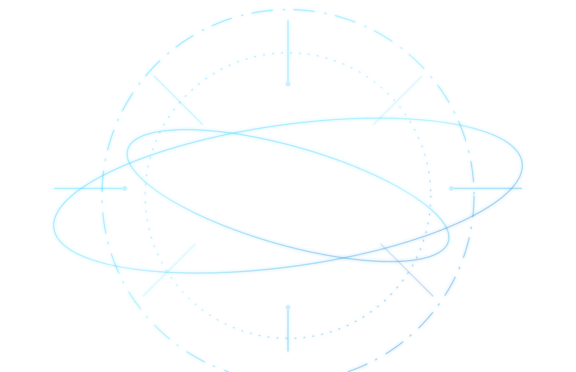
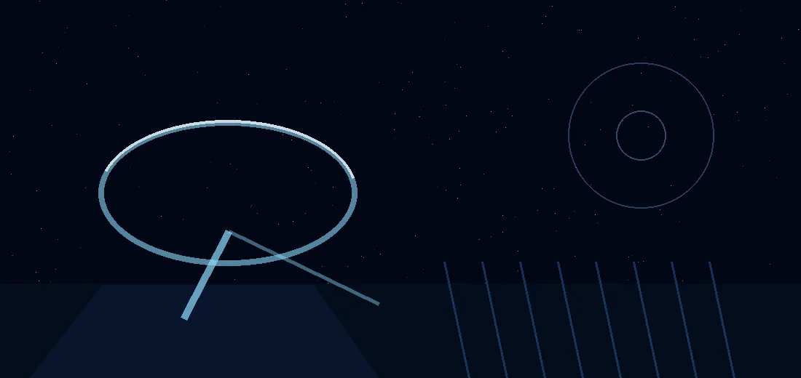
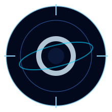

01Home 02Profile 03Schedule 04Archive 05FollowOrbital streamer / science radio
ORBIT SPACE
STREAMER O / HOSHIMEGURI ORBI
星巡オルビの公式管制卓。星空観測、科学雑談、透明な歌声を、次のミッションとして夜へ届けます。

Ground contact / business only
Ground Control Channel
研究協力、イベント出演、企業案件のご相談はこちらの専用回線へ。

Profile
眠れない夜に、星の話と歌を届ける軌道上の案内人。
活動内容
宇宙ニュース、天体観測のメモ、科学の素朴な疑問を、配信で聞きやすい言葉に翻訳。週末は歌枠とリスナー参加型の星図づくりを行います。
配信時間
平日 21:30 以降、週末は 20:00 から。天体イベントや新月の夜は特別観測回として早めに告知します。
タグ
#星巡観測 #オルビ交信 #軌道歌枠
Mission timeline
次に合流できる配信予定。
月面歌枠 / Singing Stream
透明感のあるバラード中心。途中で今週の天体観測トピックも紹介します。
観測雑談 / Talk Stream
リスナーから届いた星空写真を見ながら、夜更かし向けのゆるい科学雑談。
銀河Q&A / Answer Stream
宇宙、配信機材、活動の裏側まで質問に答える定例回。
Archive
初見でも入りやすい代表ミッション。
Community
観測班として一緒にミッションへ。
配信感想は #星巡観測、ファンアートは #オルビ交信 へ。Discord では天体イベントの予定共有と同時視聴のお知らせを行っています。
Ground contact
科学イベント、歌唱出演、企業タイアップの交信窓口。
研究機関・教育系イベント・プラネタリウム企画・配信コラボのご相談を受け付けています。実施希望時期、配信媒体、依頼内容を添えてご連絡ください。